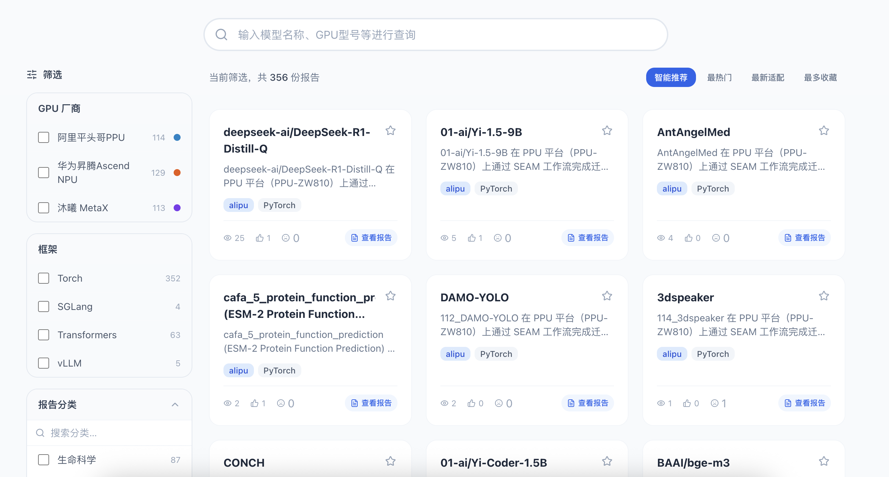

Model Adaptation模型适配平台界面截图，仅作展示；图中的搜索、筛选及报告按钮不可操作。具体报告请联系团队获取。
模型适配
SEAM 汇集不同模型在国产 GPU 平台上的迁移适配经验，涵盖运行环境、适配过程与验证结果，为模型迁移提供参考。
如需查看具体报告，请联系我们。
联系我们 · cfff@fudan.edu.cn
SEAM 汇集不同模型在国产 GPU 平台上的迁移适配经验，涵盖运行环境、适配过程与验证结果，为模型迁移提供参考。
如需查看具体报告，请联系我们。
联系我们 · cfff@fudan.edu.cn